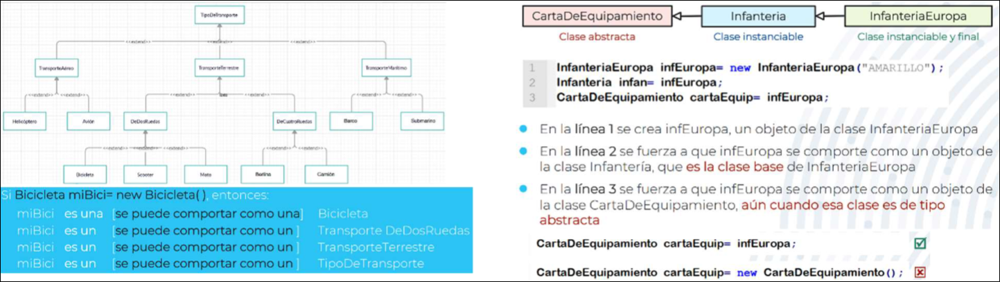
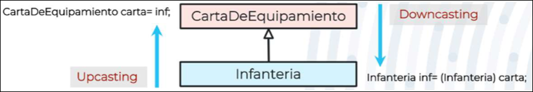
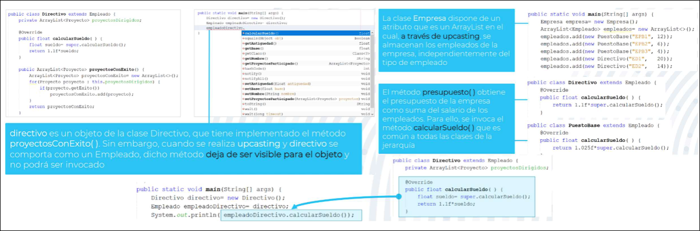
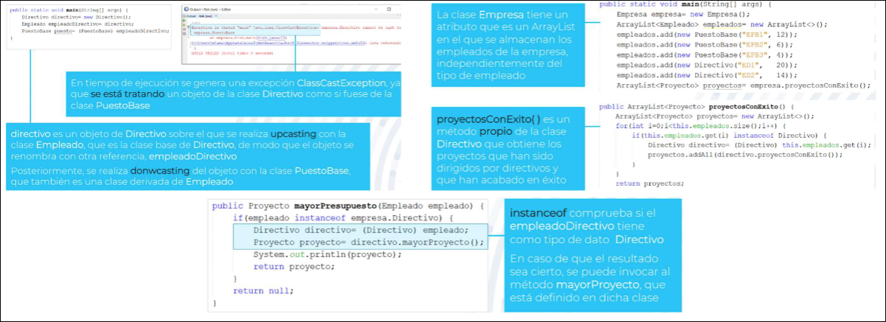

POO · curso 2
5. Polimorfismo
Escrito por Adrián Quiroga Linares.
5.1 Polimorfismo en herencia
El polimorfismo en herencia es el mecanismo por el cual un objeto se puede comportar de múltiples formas en cada momento, en función del contexto en el que aparece en el programa. Un objeto se puede comportar como una instancia de:
- La clase a la que pertenece, aquella cuyo constructor se invocó a través de
new() - Una de las clases que se encuentran en un nivel superior a la clase a la que pertenece. Esto incluye clases abstractas, pues la restricción impuesta sobre ellas es que no se pueden instanciar (usar
new()para invocar sus constructores), pero en este caso el objeto se estaría inicializando usando constructores de otras clases. Que un objeto se comporte como una de sus clases base abstracta sirve para restringir los métodos que puede invocar.

5.2 Upcasting y Downcasting
Cuando se hace que un objeto se comporte como una clase distinta a la que pertenece, está forzando un casting, un cambio de tipo de dato en él. El casting no implica una nueva reserva de memoria: el objeto sigue siendo el mismo, independientemente de los castings que se hagan sobre él. El casting afecta a la visibilidad de los atributos y métodos que se pueden invocar desde el objeto.
Los únicos métodos y atributos accesibles por el objeto al que se le ha hecho casting son:
- Aquellos definidos explícitamente en la clase a la cual se ha realizado el cast
- Aquellos que hereda (y tiene acceso) la clase a la que se hizo el cast

5.2.1 Upcasting
En upcasting un objeto de una clase derivada se comporta como su clase base en la jerarquía. Cuando se realiza un upcasting no es necesario indicar de forma explícita a qué clase base se realiza el cast, pues sólo hay una.
Animal a = new Perro(); upcasting automático y seguro
Es el mecanismo de polimorfismo más habitual, ya que el natural pensar que un objeto de una clase derivada se comporta como su clase base. Es una concepto clave en la POO, porque facilita la toma de decisiones respecto al diseño del programa: si se necesita usar upcasting, entonces se deberá usar herencia.

Nota
Si un método está sobrescrito cuando se realiza upcasting, el objeto usará la implementación del método correspondiente a la clase a la que pertenece el objeto, de modo que aunque se comporta como otra clase, no utiliza las implementaciones de los métodos de esa otra clase
5.2.2 Downcasting
En downcasting un objeto de una clase base se comporta como una de sus clases derivadas de la jerarquía. Cuando se realiza un downcasting es necesario indicar de forma explícita a qué clase derivada se realiza el cast
ClaseDerivada nombreObjDerivado = (ClaseDerivada) nombreObjBase;
Normalmente, sólo se usa cuando se necesita deshacer el resultado de un upcasting anterior, pues fuerza el comportamiento de los objetos, ya que normalmente no se puede asegurar que un objeto de una clase base se comporta como una de sus clases derivadas.
Es una operación no segura (unsafe), ya que puede generar una excepción en tiempo de ejecución ( ClassCastException) pues no se puede garantizar que el objeto disponga de todos los métodos y atributos de la clase a la que se castea.
- En tiempo de diseño, el compilador no comprueba si el cast se realiza correctamente, ni siquiera comprueba si ambas clases pertenecen a la misma jerarquía
- En tiempo de ejecución tiene lugar el casteo, pero sólo se comprueba si el objeto pertenece a la clase derivada a la que se castea. Aunque la clase a la que pertence el objeto soporte los mismos métodos y atributos que la clase derivada, si no lo es, se generará la excepción.
- Por tanto, se debe comprobar en tiempo de ejecución que la clase a la que pertenece el objeto es la clase a la que se realiza en casting usando el operador
instanceof<nombre_objeto> instanceof <nombre_paquete>.<nombre_clase>

5.3 Beneficios del Polimorfismo
Facilita la simplificación del código ya que, como los objetos se pueden manejas como objetos de su clase base, la invocación de los métodos comunes a las clases derivadas se realiza desde una sola clase (la clase base).
Facilita la extensibilidad de los programas ya que incluir nuevas clases que implementen los métodos comunes de las clases base no supondrá modificaciones en el código. Eso no se cumple con downcasting, ya que incluir nuevas clases puede implicar cambios en el código, pero serían simplemente extensiones en los métodos en los que ya se manejas las distintas clases derivadas de las clase base.
[!Buenas Prácticas]
- En la medida de lo posible se debe favorecer el uso del polimorfismo pues sus beneficios son muy grandes
- En los conjuntos de datos (como
ArrayListoHashMap) se deben usar las clases derivadas para almacenar los objetos.